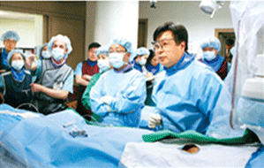
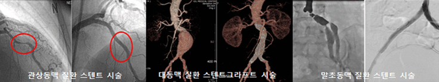
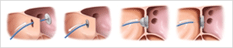
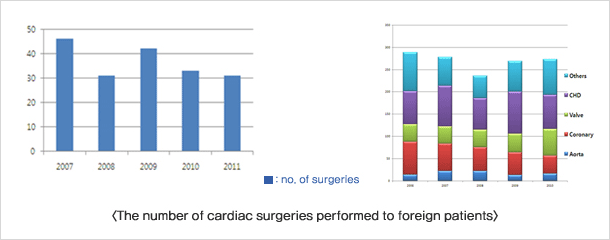
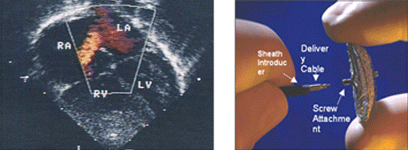

Gil Medical Center cardiologists are leaders in the use of catheter-based techniques for patients, especially with angina or myocardial infarction (MI). With the most advanced diagnostic equipments, more than 3,000 procedures of angiography and coronary artery intervention have been done annually, which includes percutaneous transluminal coronary angioplasty (PTCA) and stent placement. For the sake of the precise diagnosis of heart disease, more than 15,000 times of echocardiogram is performed yearly. Continuous development of technology and study of cardiovascular diseases (e.g., coronary artery disease, valvular heart disease, peripheral vascular disease) enables us to provide a full scope of care for any type of heart condition in adults and children.

Procedure
Cardiac Catheterization Intervention
1. Admission period : 3 to 4 days
2. Expected cost : 15,000-20,000$ Cardiac catheterization intervention enables surgical treatment by inserting catheter - amplatzer - via femoral artery of a leg, pro-moting early recovery and discharge from the hospital for below heart diseases.
3. Atrial Septal Defect Patent Ductus Arteriosus Patent Foramen Ovaletive ileus.
Artificial Health Valve Surgery

1. Admission period : 21 days
2. Expected cost : 50,000-60,000$
3. Surgery to replace natural heart valve (malfunction) with an artificial one
Cardiothoracic Surgery
We are the only medical center who offers heart transplant in the city of In-cheon. Average of 500 to 600 times of cardiovascular and thoracic surgeries per year have been performed, serving as a regional heart expert institution. 24-hour hotline for medical emergencies is also available in order to provide the safest and the most immediate medical treatment.
Surgery for aortic disease
We have been successful in minimizing complications and death rates among patients who received surgeries for aotic disease, such as aortic aneurysm. Nowdays, non-invasive procedures(e.g. stent graft)are implemented together with conventional surgeries. (hybrid operation)
Surgery for coronary artery diseases
For coronary artery diseases, there have been high rates of long-term therapeutic stability of heart after receiving arterial catheterization CABG(coronary artery bypass graft) or off-pump CABG.
Surgery for heart valve disease
Early plastic intervention for various heart valve diseases has been performed in order to preserve patient's own valves, which include aortic valve, mitral valve, and tricuspid valve. It has shown high success rates in elderly patients as well.
Surgery for congenital heart disease
Our cardiac surgery teams offer advanced treatments for complex congenital heart diseases in all ages, which include ASD, VSD, TOF, TGA and SV. In case of foreign patients with pulmonary hypertension, which is a typical symptom for unteated cardiac status, we have been able to produce therapeutic postoperative results ad minimizing complications with up-to-date medications.
Interventional Cardiac Catheterization

A cardiac intervention specifically designed for congenital heart diseases, such as ASD(Atrial Septal Defect), PDA(Patent Ductus Arteriosus), PFO(Patent Foramen Ovale) that does not require the use of Amplatzer; also in Percutaneous valvuloplasty and Percutaneous Angioplasty. It is currently being performed 50 to 60 times per year.
Pediatric Cardiology
We can cure congenital heart disease without harming your children physically or psychologically. Interventional cardiac catheterization is a technique to diagnose and treat heart disease without making an incision on skin. It enables an early recovery and activities of daily living.

Gil Medical Center has performed more than 250 times of cardiac surgeries for children from ten different countries with congenital heart condition for the last ten years. Countries are as follows: Uzbekistan, Kazakhstan, Kyrgyzstan, China, Nepal, Mongolia, Iraq, Vietnam, Cambodia, Philippines, Indonesia, Myanmar Republic, El Salvador. Cardiac exams (e.g. cardiac ultrasound or cardiac catheterization) are performed to diagnose patients in all ages with utmost precision. Patients are referred to cardiothoracic surgery department or provided with minimally invasive interventions. In order to evaluate efficacy of medical interventions, regular consultations and continuous monitoring is offered
Neurosurgery
In our cerebrovascular center, we make our effort to minimize complications that can occur from brain-related surgeries by making only necessary skin incisions. In case of cerebral aneurysm, cerebrovascular malformation, cerebrovascular stenosis or carotid artery stenosis, stent or coil placement is an available option before considering other invasive procedures.
If complications are highly concerned or access to the anatomical target is limited, alternative treatment method (e.g radiotherapy) will be considered to maximize positive outcome for patients.
Neurology
The department of neurology offers the most advanced and promising approaches for diagnosing and treating neurologic diseases, such as ischemic stroke. By using intravascular thrombolysis, we treat blood flow problems affecting the brain and spinal cord, and our Stroke Unit, which is composed of a multidisciplinary team of neurocritical care experts, provides comprehensive care to minimize disabling or life-threatening moments of patients.